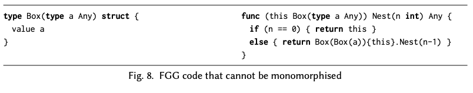
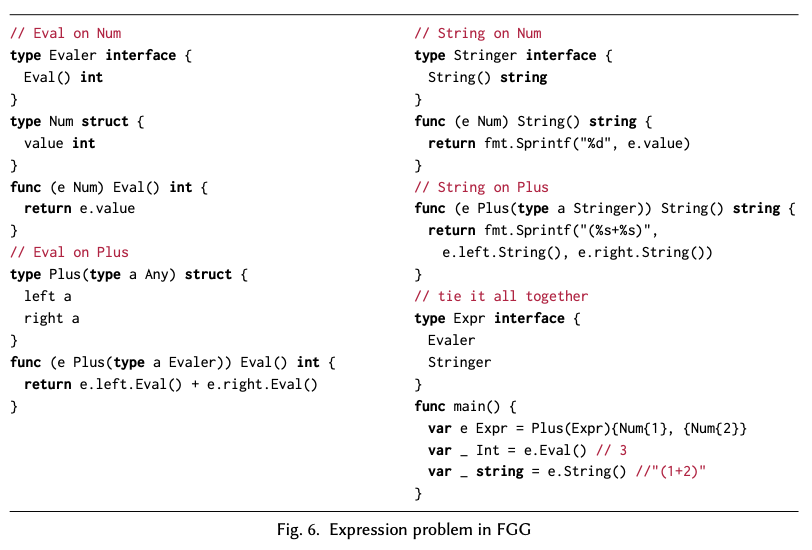

Robert Griesemer, Raymond Hu, Wen Kokke, Julien Lange, Ian Lance Taylor, Bernardo Toninho, Philip Wadler, Nobuko Yoshida
Would you be interested in helping us get polymorphism right (and/or figuring out what “right” means) for some future version of Go?
This paper is our response to that question.
↑ かっこいい
package compare
// The equal contract describes types that have an Equal method with
// an argument of the same type as the receiver type.
contract equal(T) {
T Equal(T) bool
}
// Index returns the index of e in s, or -1.
func Index(type T equal)(s []T, e T) int {
for i, v := range s {
// Both e and v are type T, so it's OK to call e.Equal(v).
if e.Equal(v) {
return i
}
}
return -1
}
go.googlesource.com/proposal/+/master/design/go2draft-contracts.md
type Any interface {}
type Eq interface {
Equal(that Eq) bool
}
type empty struct {}
interface という構文で定義された関数の組を実装すると、その型として使うことができるempty は Any ではあるが、 Eq ではないいろいろあるが…

型安全性を保ちながら、再コンパイルせずに、ジェネリックな型に対して、新しいメソッドや具体的な型を追加するにはどうすれば良いか？
データを追加すると、データを使っている全ての関数に対して変更が散らばる
data Expr = Const Int | Add Expr Expr
toString (Const i) = show i
toString (Add e1 e2) = toString e1 ++ " + " ++ toString e2
eval (Const i) = i
eval (Add e1 e2) = eval e1 + eval e2
class Expr {
public:
virtual string to_string() const = 0;
virtual int eval() const = 0;
};
class Const : public Expr {
public:
Const(int value) : value_(value) {}
string to_string() const {
std::ostringstream ss; ss << value_;
return ss.str();
}
int eval() const {
return value_;
}
private:
int value_;
};
class Add : public Expr {
public:
Add(const Expr& e1, const Expr& e2) : e1_(lhs), e2_(rhs) {}
std::string to_string() const {
return e1_.to_string() + " + " + e2_.to_string();
}
double eval() const {
return e1_.eval() + e2_.eval();
}
private:
const Expr& e1_; const Expr& e2_;
};
今度はメソッド追加のたびに、全ての実装に変更が必要

type Minus を追加したい場合は、別モジュールに Evaler と Stringer を追加すれば良いString を追加するのも、後から interface と実装を書いて埋め込むだけで済んでいる。
Evaler かつ Stringer であれば、自動的に Expr となる。